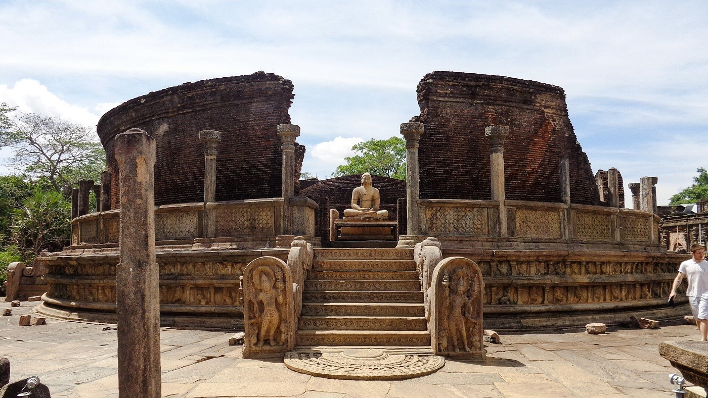

Vatadage
This beautiful Stupa House (Vatadage) has been built before the time of Nissanga Malla (1187-1196) but he has carried out major renovations on this building. So what you see today is probably his work. The uniqueness of such buildings is that the Stupa is protected by a roof. Therefore Stupa’s in such buildings are small. Another beautiful “Vatadage” is situated in Madirigiriya few kilometers away from Polonnaruwa. A detail description of the overall “Stupaghara” or “Chethiyaghara” architecture including vatadages of Sri Lanka can be found here. On the centre is a small stupa and on the four sides, there are beautifully carved Buddha statues. These statues are different to what is normally found. The curly hair is not visible on the head. And the robe is also flat which is unusual. The roof has been supported by two rows of stone pillars around the Stupa. None of the pillars are visible today. But the pillars outside the walls are still intact. Four sets of beautifully carved stone stairs lead the upper level from four sides. On the side of stair case some of most beautiful guard stones and moonstones in this area can be seen. The guard stones on the eastern side of the temple is said to be the best guard stone in t he Polonnaruwa era. Stone slab at the entranceThe moon stone at the entrance (see top entrance) Gurad Stones Gurad Stones Steps leading to the upper chamber wth the guard stones and the moonstone The moonstones in the Polonnaruwa era had undergone a major change compared to the Anuradhapura moonstones. The most visible is the disappearance of the bull in the carvings. (See Pancavasa with the Moonstone for a brief description of moonstones in Anuradhapura era.) Where the moonstones originally had four animals – the elephant, the horse, the lion, the bull, now only three remain. Bull is the vehicle of God Shiva (according to Hindu beliefs) and is considered a holy animal by Hindu’s. Probably for this reason, it has been taken off the moonstone where everybody who enters the temple tramples. Instead the bull has been placed on the side of the stairways at a higher elevation in some places.
